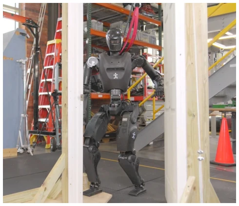
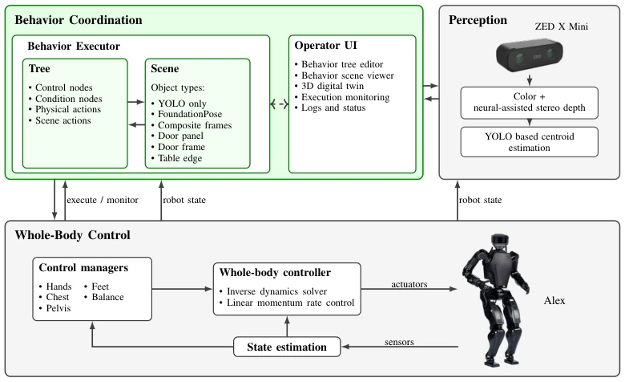
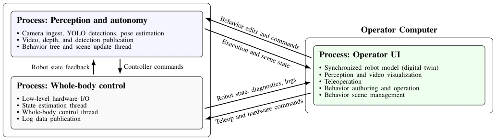
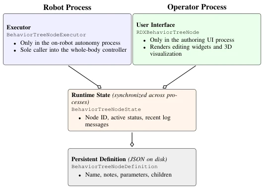
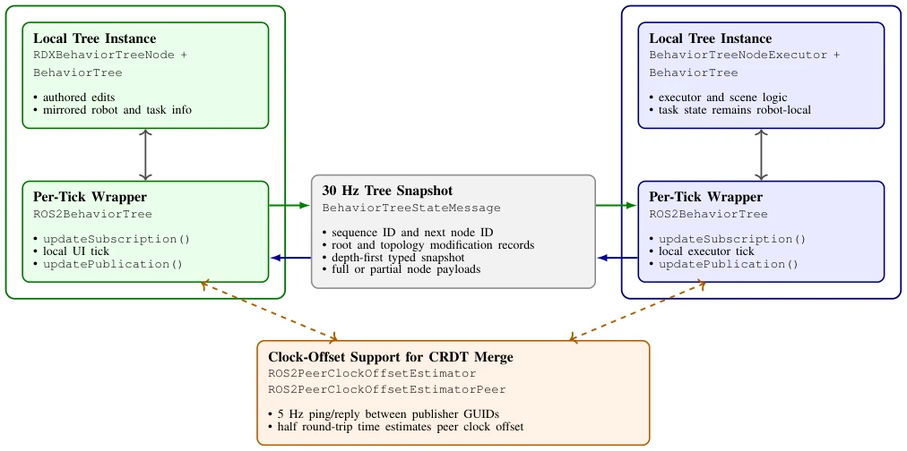
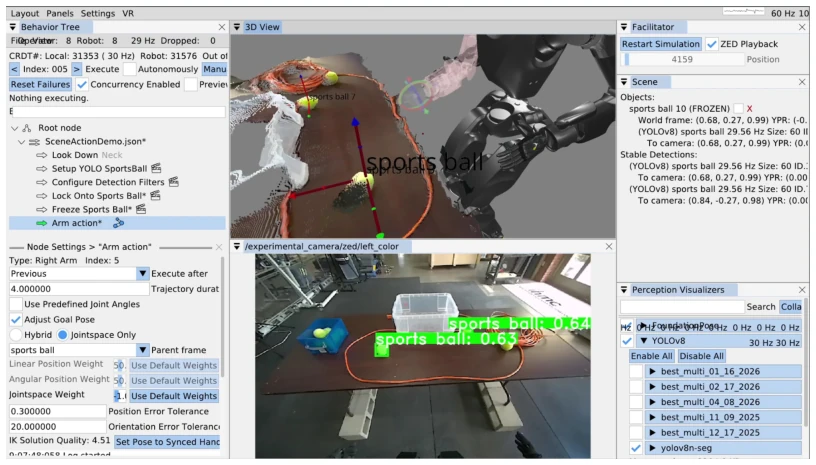
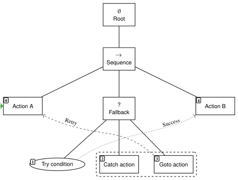
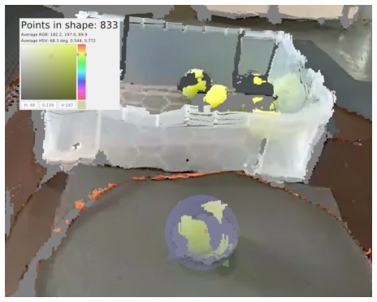
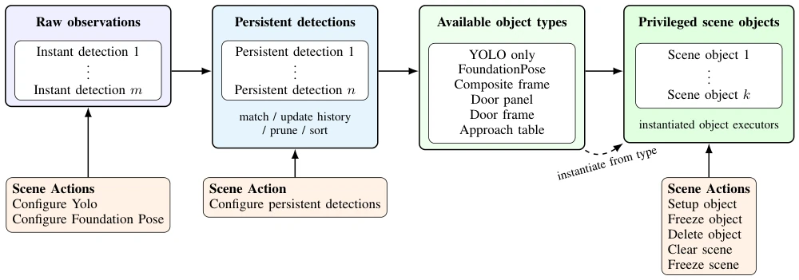
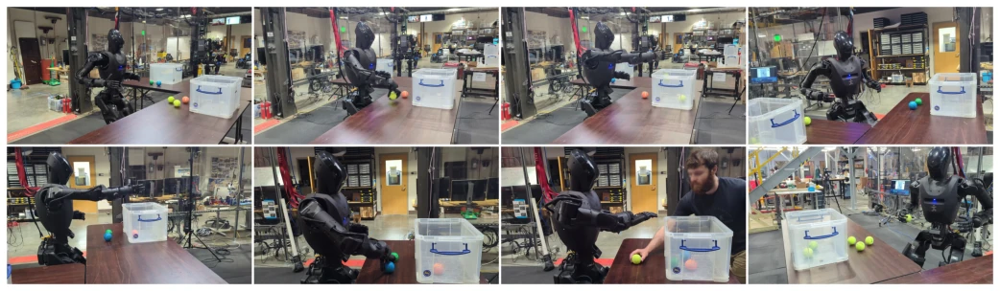

A System for Fast, Resilient, and Adaptable Loco-Manipulation Behaviors on Humanoid Robots
Duncan Calvert, Luigi Penco, Dexton Anderson, Tomasz Bialek, Arghya Chatterjee, Beomyeong Park abspdf
论文点评Review
这篇论文展示了一套工程上相当扎实的人形机器人 locomotion + manipulation 系统，堪称传统控制与感知的集大成者。亮点在于运行时可编辑和物体中心动作，让专家能快速修改行为树，而不是重新训练模型。Alex 机器人开门只需 34 秒，速度确实快，比很多纯学习策略更可靠，且能抵抗人为扰动。但缺点也很明显：这本质上还是基于规则和模板的架构，不是端到端的 AI 决策。所谓的智能更多体现在感知模块（YOLO）和逻辑编排上，而非模型本身的泛化能力。对于非专家用户，这种复杂的运行时编辑界面可能门槛过高，且依赖人工定义场景对象，泛化到新环境仍需大量调参，离真正的通用机器人还有距离。
This paper presents a highly robust engineering humanoid robot locomotion + manipulation system, representing the culmination of traditional control and perception. The highlights lie in runtime-editable and object-centric actions, enabling experts to quickly modify behavior trees rather than retraining models. The Alex robot opens a door in just 34 seconds; the speed is indeed fast, more reliable than many pure learning strategies, and capable of resisting human-induced perturbations. However, the drawbacks are equally obvious: this is essentially a rule and template-based architecture, not end-to-end AI decision-making. The so-called intelligence is manifested more in the perception module (YOLO) and logic orchestration, rather than the model's own generalization capability. For non-expert users, this complex runtime editing interface may present a prohibitively high barrier, and relying on manually defined scene objects means generalization to new environments still requires extensive parameter tuning, remaining distant from true general-purpose robots.
Humanoid robots face significant challenges when executing tasks in human environments (such as door opening, carrying), requiring coordination of walking, whole-body motion, perception, and contact. Existing systems often struggle to balance speed and adaptability. Traditional architectures like [1], although validated by DRC, have high modification costs and struggle to cope with new task variants; whereas recent learning strategies like [36, 37, 38], while fast, rely on simulation training, making physical debugging difficult and logic modification at runtime hard, requiring retraining once the environment changes. This paper aims to address how behavior architectures can support fast execution, robustness, and runtime adaptability. The door opening task involves precise gait, force control, and collision avoidance; existing methods are prone to failure under perturbations. The authors propose a runtime-editable behavior architecture, aiming to reduce expert debugging time and achieve rapid iteration from empty sequences to autonomous success, compensating for deficiencies in existing systems regarding physical deployment and modification flexibility, particularly when rapid adaptation to new doors or tasks is required.

Fig. 1. IHMC’s fully electric Alex humanoid robot traversing a right pull door. Alex is the primary platform in the evaluations presented here. Supplementary video material accompanies this submission.
The system architecture is divided into robot-side and executor-side, synchronizing state via a CRDT mechanism at 30Hz to ensure UI and robot state consistency. The behavior tree adopts a custom implementation, not a standard BT; its core is a depth-first traversal of leaf nodes where everything is a sequence, combined with a next-execution-index state, similar to a state machine but more flexible. Innovations include: 1) Object-centric action definition, where actions are relative to perceived objects (e.g., door handles) rather than the robot body, reducing cumulative error; 2) Behavior Scene, containing a list of perceived objects and scene actions, supporting YOLO and FoundationPose model configuration; 3) Shape-inclusive conditional nodes, utilizing GPU kernels to rapidly detect color and point counts in point clouds, achieving perceptual reactivity; 4) Human-robot synchronized UI, supporting runtime editing, monitoring, and repair. The controller is based on linear momentum rate control and supports asynchronous commands.

Fig. 3. This figure illustrates the domain of our behavior system. Our work centers on behavior coordination and how it integrates with perception and whole-body control. Our behavior executor owns and manages a tree and scene in coordination with a human operator. Perception is provided via a ZED X Mini [39] and semantic object detections from YOLO [40]. Physical behavior actions are executed via a whole-body controller which can achieve objectives asynchronously and simultaneously. Control objectives include moving or locking parts of the body and walking.

Fig. 4. The runtime structure used in this work. Two processes run on the robot, and an operator process supports authoring, supervision, and visualization.

Fig. 5. Four-part decomposition used for each behavior-tree node (left). Two process-specific layers, UI and executor, each own an instance of a runtime state, which in turn owns a persistent definition. The synchronization layer keeps the runtime state and the live-edited portion of the definition consistent across processes, while the full definition is persisted as JSON. The condensed JSON excerpt (right) illustrates the type, children, and parameter fields saved for each node.

Fig. 6. Behavior-tree synchronization between the operator UI and robot executor. Each side maintains a local tree instance and a per-tick synchronization wrapper. A 30 Hz depth-first tree snapshot carries either full or partial per-node payloads. Bidirectional CRDT fields use clock-offset-corrected last-writer arbitration; robot-owned status fields are mirrored one way to the UI.

Fig. 7. A screenshot of the operator interface. On the mid-left, the behavior tree editor is shown with neck and scene actions that acquire a lock on a sports ball. In the bottom left, parameters for authoring an arm action are shown, with “sports ball” as the selected frame. In the center, a red, green, and blue 3D pose gizmo is used to author the hand pose relative to the ball. In the top right, the current behavior scene items are shown.

Fig. 8. A sample tree illustrating our sequence and fallback functionality. The next action to execute is held as state between updates, as indicated by the green arrow pointing to Action A. In our tree, “everything is a sequence” in the depth-first ordering of the leaves, which are numbered in the figure. When the fallback try fails, the rest of the children are executed as a sequence. When it succeeds, the catch sequence is skipped. Goto nodes are used to re-route execution manually.

Fig. 9. A GPU-accelerated kernel counts points and average color within a virtual sphere. Here, it is detecting 833 yellow points for a tennis ball. This mechanism is used by our condition node to provide authorable perceptual reactivity.

Fig. 10. The behavior scene consists of a list of active persistent detections and a privileged list of objects. Object types can be implemented to derive structured information about the scene. Scene actions are used to manage the privileged objects and the underlying perception models.
Validated on Unitree H1-2 and Alex robots. Tasks include door opening traversal and colored ball sorting. The door opening task takes 34 seconds, and sorting 6 balls takes 45 seconds (including human-induced perturbations). Compared with literature [36, 37, 38], the speed is competitive and reliability is higher. Runtime editing tests show that experts can create new behaviors or adapt existing ones within hours. The perception module demonstrates robustness under diverse door configurations. Ablation studies are not listed in detail, but different task variants were compared, proving the architecture's generalization. The main findings are that runtime editing significantly reduced iteration cycle time, and object-centric definitions improved task success rates. The system demonstrated robustness in real physical environments, proving the effectiveness of rule-based architectures on specific tasks.

Fig. 2. Alex performing a two-table loco-manipulation reactive ball-sorting task. The robot sorted nine balls across two tables in 2 minutes and 8 seconds. Supplementary video material accompanies this submission.